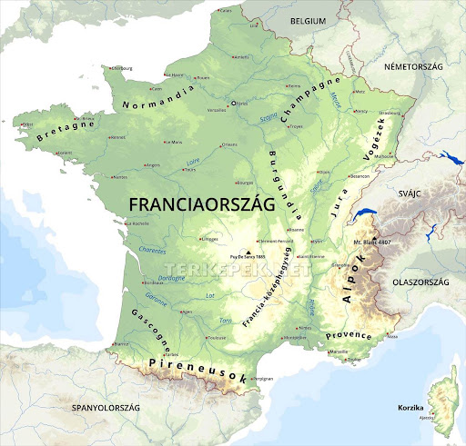

Franciaország, vagy hivatalos nevén a Francia Köztársaság, egy független állam Nyugat-Európában, amely európai közigazgatási és tengerentúli területekkel egyaránt rendelkezik.
Kontinentális területe a Földközi-tengertől a La Manche-csatornáig és az Északi-tengerig, valamint a Rajnától az Atlanti-óceánig terjed.
Kontinentális területe a Földközi-tengertől a La Manche-csatornáig és az Északi-tengerig, valamint a Rajnától az Atlanti-óceánig terjed.
